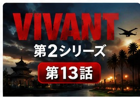

新庄の潔白、長野専務の正体、そして野崎への疑念。
第2シリーズの本筋が動き出す
キプロスでアリを確保した乃木は、新庄の行方を追ってタイへ。追跡の先で事件の構図が反転し、最後には乃木と野崎の関係を根本から揺るがす疑惑が浮上します。

1. 日本橋の三越本店にて
野崎守は日本橋の三越本店で乃木と接触し、別班員5人拉致事件について情報交換します。双方とも新庄の関与を疑っており、焦点はその行方へ。
第2話でアリから得た情報により、新庄がタイへ逃亡していることが判明していました。乃木にとっては、新庄が拉致事件にも関わっているのかを直接確かめる機会になります。
2. 新庄浩太郎はタイの大富豪に匿われていた
新庄はタイの実業家チョッキー・テーパーニットを頼って逃亡。第2話で特定された別荘地の「ナンバー5」が潜伏先でした。
チョッキーは新庄を単なる逃亡者として扱っているのではなく、強い感情を持って守っていました。
3. 乃木とドラム、新庄を追い詰める
乃木とドラムは新庄の潜伏先を包囲。しかし新庄は正面から戦うのではなく、混乱を作り出して逃げる「カオス」を選びます。
4. 新庄浩太郎が仕掛けた「大爆発」
新庄はケチャップを血に見せかけ、地下へ逃げ込み、屋敷を爆破。想定以上の大爆発となり、上階が吹き飛ぶほどの騒ぎになります。
新庄とチョッキーは救急車で脱出しますが、乃木は怒るどころか、わずかに笑います。最初から次の行動まで読んでいた可能性を感じさせる場面です。

5. 新庄浩太郎を確保する
新庄は最終的に乃木たちに拘束されます。乃木のもう一つの人格Fから厳しい尋問を受けても、新庄は「別班員5人の情報を売っていない」と主張し続けます。
さらに新庄は、日本が世界と対等に生きていくためには、別班のような非公認組織が必要だという考えまで示します。
6. 新庄浩太郎は別班員を売っていなかった
ブルーウォーカー太田梨歩が新庄のスマートフォンを解析しますが、別班員5人の情報を外部へ流した痕跡は見つかりません。

7. チョッキーが語った新庄を守る理由
チョッキーは、新庄が別班員情報の提供を持ち掛けられながら、それを拒否していたと説明します。
なぜそこまで新庄を守ったのか。その理由は、新庄を愛していたから。AIハヤトもその言葉を高い確率で真実と判定します。
8. 長野専務の正体
第2話の最後、ホテルに現れた丸菱商事の長野専務。乃木と長野は陸上自衛隊式の敬礼を交わし、ここで長野が東南アジア方面を統括する別班員だったことが明らかになります。
同じ別班に所属しながら、乃木と長野は互いの正体を知らなかった。別班という組織の特殊性が改めて示されます。
9. 長野とブルーウォーカー太田梨歩の過去
太田が長野へ近づいたのは、丸菱商事に潜んでいたモニター・山本から身を守るためでした。単純な恋愛関係ではありません。
太田を大切に思うドラムは長野へ強く警戒しますが、長野は余裕を見せます。そして乃木にはこう語ります。
薫やジャミーン、そして父ベキを抱える乃木にとって、重い言葉として残ります。
10. 本当の裏切り者が判明する？
新庄が別班員5人を売っていなかったことから、太田は別の情報経路を追跡します。そこから、公安外事第4課・和久井俊作のスマートフォンが使われていたことが判明。
さらに乃木は、第12話で野崎が口にしていた「直前でフライト時間が変更された便はあるか」という言葉を思い出します。この情報によって捜査はロシア方面へ誘導されていましたが、実際の新庄はタイにいました。
監視映像に映っていた、和久井のスマートフォンを使う人物。その姿を見た乃木とドラムは驚愕します。
さらに野崎はエルサレムで謎の人物と接触し、ヘブライ語で「上層部が喜んでいる」と告げられます。

第13話で新たに分かったこと
| 項目 | 第13話終了時点 |
|---|---|
| 新庄浩太郎 | 別班員5人の情報を売っていなかった |
| チョッキー | 新庄を愛しており、逃亡を支援していた |
| 長野利彦 | 東南アジア方面を統括する別班員だった |
| 太田梨歩 | 長野との関係には山本から身を守る目的があった |
| 別班員拉致事件 | 新庄以外に情報を流した人物がいる |
| 野崎守 | 拉致事件の情報流出に関与している疑いが浮上 |
| 物語 | ここから「別班奪還」へ向けた本格的な物語へ移行 |
第13話の見どころ
最大のポイントは、長野専務が別班員だったことと、最後に野崎へ最大級の疑いが向けられたことです。
第1シリーズで乃木と野崎は敵対しながらも、最後には互いを認め合う関係になっていました。だからこそ「野崎は本当に裏切ったのか？」という疑問は、単なる黒幕候補の登場以上の意味を持ちます。
第13話を境に、物語は前作の後日談ではなく、新しい『VIVANT』の物語へ完全に切り替わった回と言えます。